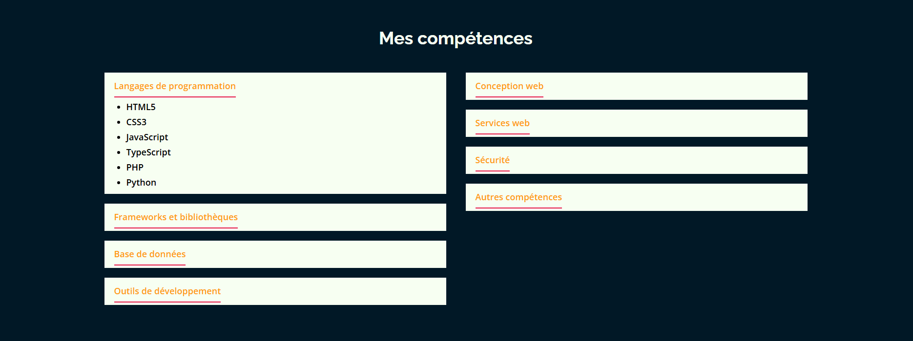
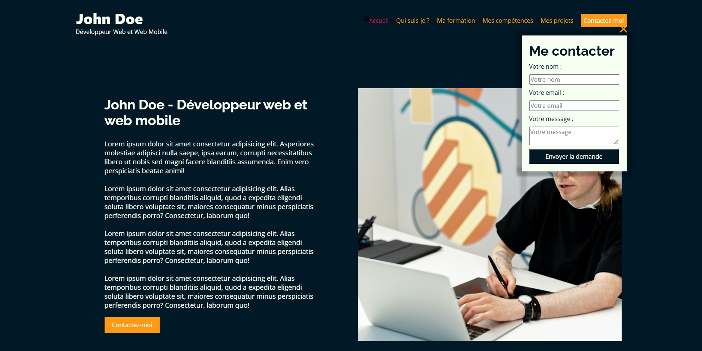

Portfolio de John Doe
Conception et développement d'un portfolio pour un développeur web avec des contenus animés dans un style sombre et moderne.
Mes compétences mobilisées
- HTML5
- CSS3
- Responsive
Aperçu

Création d'un menu déroulant
